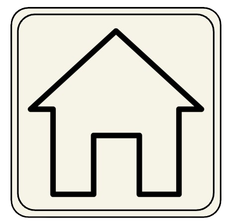

Home
- Second Place International WiCyS Poster Competition, April 2025: Awarded second place for poster presentation, “Exploring Large Language Models for Secure Computer Task Automation” judged by a panel of 25 experts
- Great Minds in Stem Scholarship, July 2025: Awarded a fully-funded scholarship to present research at GMiS Student Research Poster Competition
- Computing Research Association Scholar, March 2025: Awarded a financial stipend for research and academic performance, to regularly participate in bi-weekly CRA-CAHSI research and graduate school workshops
- Islander Leadership Scholarship, 2024-2025: Selected as recipient for the Islander Leadership Scholarship (2024-2025), based on leadership positions, volunteer experience, and GPA
- Presidential Scholarship 2022-2026: Selected as recipient for TAMU-CC’s highest-level institutional scholarship based on academic performance